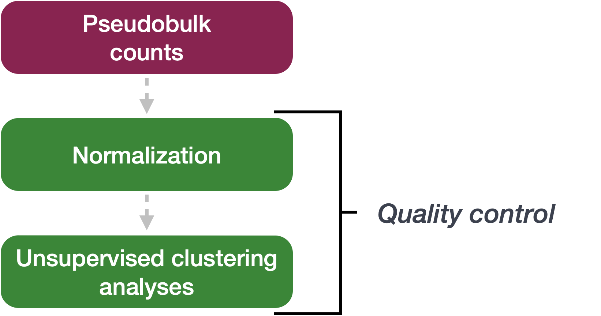
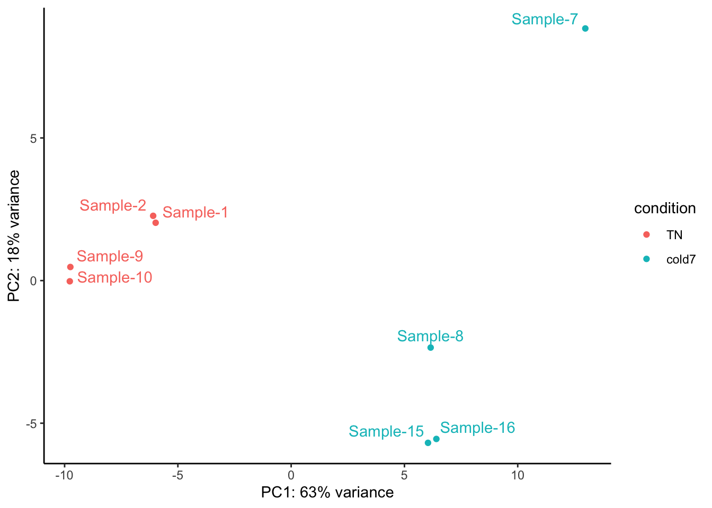
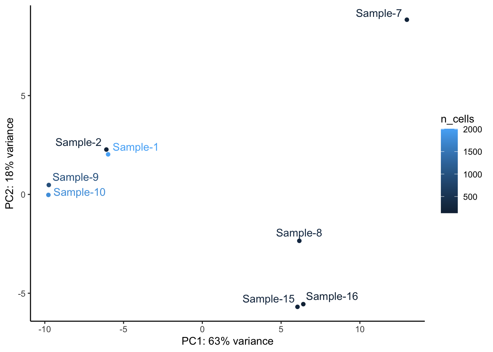
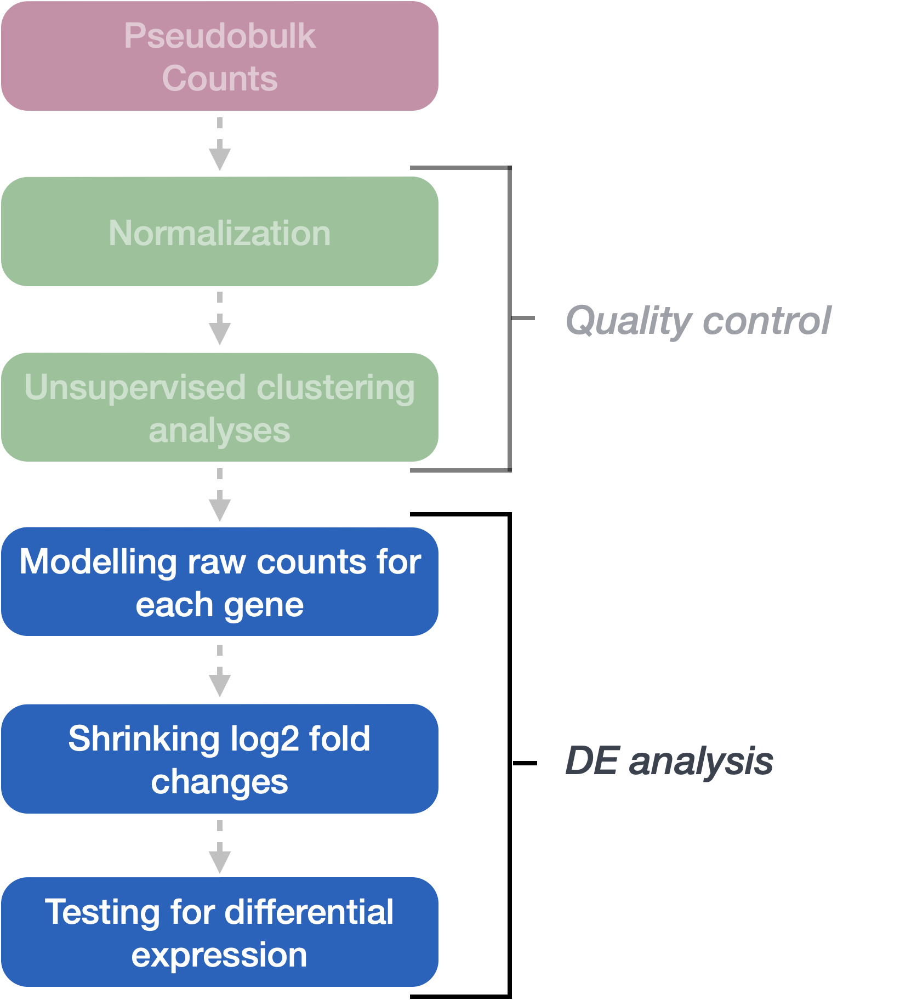
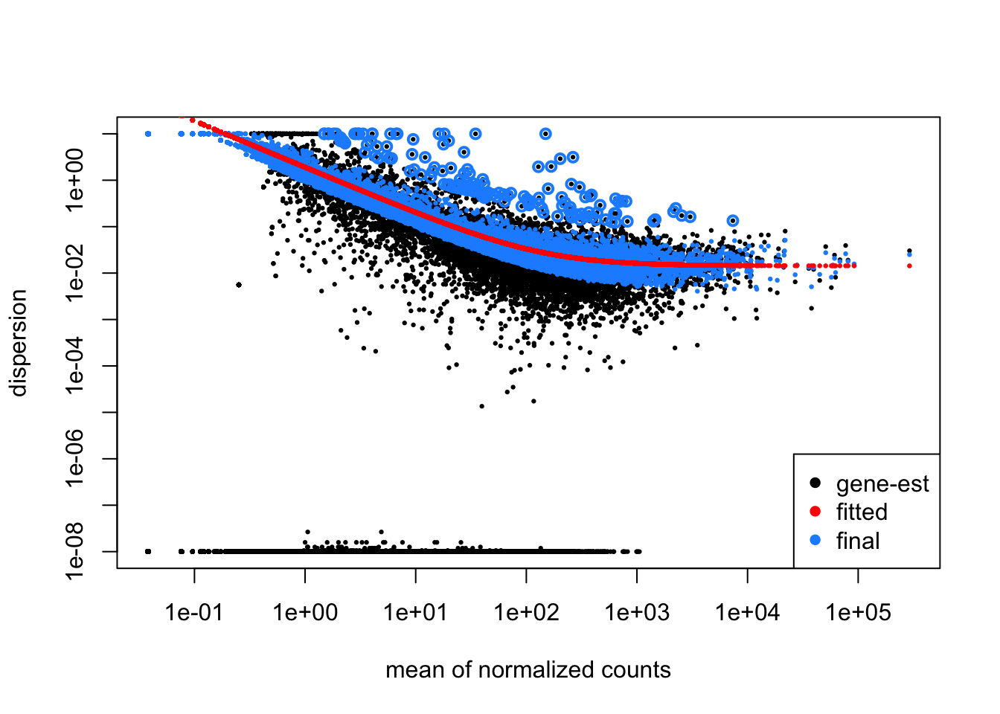

Noor Sohail, Mary Piper, Lorena Pantano, Amélie Julé, Meeta Mistry, Radhika Khetani
Published
September 12, 2024
Approximate time: 40 minutes
Learning Objectives:
Apply methods for sample-level QC
Explain the different steps involved in running DESeq()
Generating a table of differentially expressed genes
Sample-level QC
A useful initial step in an RNA-seq analysis is to assess overall similarity between samples:
Which samples are similar to each other? Which are different?
Does this fit the expectation from the experiment’s design?
What are the major sources of variation in the dataset?
To explore the similarity of our samples, we will be performing quality checks using Principal Component Analysis (PCA) and a hierarchical clustering approach.

Sample-level QC allows us to see how well our replicates cluster together, and observe whether the experimental condition represents the major source of variation in the data. Performing sample-level QC can also help identify any sample outliers, which may need to be explored further to determine whether they need to be removed prior to DE analysis.
In this lesson, we will introduce to you two different unsupervised clustering methods for exploratory data analysis. When using unsupervised methods it is helpful to apply a normalization or transformation to the data to improve the distances/clustering for visualization, rather than using raw counts. DESeq2 uses median of ratios method for count normalization, which is typically used for plotting expression data downstream after DE analysis. DESeq2 also has the option to transform counts using a regularized log transform (rlog) or varaince stabilizing transform (vst) as these can moderate the variance across the mean, and improve the clustering. The transformation of raw count data is recommended for sample-level QC.
PCA
Principal Component Analysis (PCA) is a dimensionality reduction technique used to emphasize variation and bring out strong patterns in a dataset. Details regarding PCA are given in our prepared lesson linked here.
We can run the rlog() function from DESeq2 to normalize and rlog transform the raw counts. Then, we could use the plotPCA() function to plot the first two principal components. By default, the plotPCA() function uses the top 500 most variable genes to compute principal components, but this parameter can be adjusted. Unfortunately, the plotPCA() function doesn’t label the point, so we will use the returnData = TRUE option to create a dataframe that we can use to plot the PCA ourselves.
# Transform counts for data visualizationrld <-rlog(dds, blind=TRUE)# Return PCA data as a dataframepca_data_condition <-plotPCA(rld, intgroup=c("condition"), returnData =TRUE) # Create a new column with the names cleaned up called names_parsedpca_data_condition <- pca_data_condition %>%mutate(name_parsed =gsub("VSM_|_TN|_cold7", "", name))# Plot the PCA resultsggplot(pca_data_condition, aes(x = PC1, y = PC2, color = condition, label = name_parsed)) +geom_point() +geom_text_repel(vjust =1.5, hjust =0.5, show.legend =FALSE) +theme_classic() +xlab(paste0("PC1: ", round(attr(pca_data_condition, "percentVar")[1] *100), "% variance")) +ylab(paste0("PC2: ", round(attr(pca_data_condition, "percentVar")[2] *100), "% variance"))

In this example, we see a nice separation between our samples on PC1 by our condition of interest. This suggests that our condition of interest is the largest source of variation in our dataset. There is also a reasonable amount of within group variation for both TN and cold7 samples, with one of the cold7 samples off on its own in the top right quadrant of the plot.
We can check whether the number of cells from which the aggregated counts were derived influences the separation of the samples in the PCA plot. This is particularly useful if you notice an outlier sample, which may be explained by its very low (or very large) cell count compared to others. Here, the number of cells does not appear to explain the outlier cold7 sample.
# Return PCA data as a dataframepca_data_n_cells <-plotPCA(rld, intgroup=c("n_cells"), returnData =TRUE) # Create a new column with the names cleaned up called names_parsedpca_data_n_cells <- pca_data_n_cells %>%mutate(name_parsed =gsub("VSM_|_TN|_cold7", "", name))# Plot the PCA resultsggplot(pca_data_n_cells, aes(x = PC1, y = PC2, color = n_cells, label = name_parsed)) +geom_point() +geom_text_repel(vjust =1.5, hjust =0.5, show.legend =FALSE) +theme_classic() +xlab(paste0("PC1: ", round(attr(pca_data_n_cells, "percentVar")[1] *100), "% variance")) +ylab(paste0("PC2: ", round(attr(pca_data_n_cells, "percentVar")[2] *100), "% variance"))

Sample correlation
Similar to PCA, hierarchical clustering is another, complementary method for identifying strong patterns in a dataset and potential outliers. The heatmap displays the correlation of gene expression for all pairwise combinations of samples in the dataset. Since the majority of genes are not differentially expressed, samples generally have high correlations with each other (values higher than 0.80). Samples below 0.80 may indicate an outlier in your data and/or sample contamination.
The hierarchical tree can indicate which samples are more similar to each other based on the normalized gene expression values. The color blocks indicate substructure in the data, and you would expect to see your replicates cluster together as a block for each sample group. Additionally, we expect to see samples clustered similar to the groupings observed in a PCA plot.
Since we detected no outliers by PCA or hierarchical clustering, nor do we have any additional sources of variation to regress, we can proceed with running the differential expression analysis.
Exercises
Use the dds_APC object to compute the rlog transformed counts for the Pdgfr α+ APCs.
Create a PCA plot for the Pdgfr α+ APCs, coloring points by condition. Do samples segregate by condition? Is there more or less variability within group than observed with the VSM cells?
Evaluate the sample similarity using a correlation heatmap. How does this compare with the trends observed in the PCA plot?
Running DESeq2
Differential expression analysis with DESeq2 involves multiple steps as displayed in the flowchart below in blue. Briefly, DESeq2 will model the raw counts, using normalization factors (size factors) to account for differences in library depth. Then, it will estimate the gene-wise dispersions and shrink these estimates to generate more accurate estimates of dispersion to model the counts. Finally, DESeq2 will fit the negative binomial model and perform hypothesis testing using the Wald test or Likelihood Ratio test. All of these steps are explained in detail in our additional materials.

All of the steps described above are conveniently performed by running the single DESeq() function on the DESeq2 object (dds) we created earlier.
# Run DESeq2 differential expression analysisdds <-DESeq(dds)
Everything from normalization to linear modeling was carried out by the use of a single function! This function will print out a message for the various steps it performs:
Model fitting
The aggregated count data generated by RNA-seq exhibits overdispersion (variance > mean) and the statistical distribution used to model the counts needs to account for this. As such, DESeq2 uses a negative binomial distribution to model the RNA-seq counts using the equation below:
The two parameters required are the size factor, and the gene-wise dispersion estimate; both of which can estimated from the observed data. Next, a generalized linear model (GLM) of the NB family is used to fit the data. Modeling is a mathematically formalized way to approximate how the data behaves given a set of parameters.
Size factor is used to make count values from different samples comparable. This is necessary because different samples may have been sequenced to different depths. DESeq2 uses the median of ratios method for computing a size factor for each sample.
Dispersion models the within-group variability by describing how much the variance deviates from the mean. A dispersion of 1 would indicate that there is no deviance from the mean (i.e., mean = variance). A typical RNA-seq dataset will exhibit some amount of biological variability present across replicates and so we will always have dispersion values less than one.
Effect on dispersion
Variance increases
Dispersion increases
Mean expression increases
Dispersion decreases
We can check the fit of the model to our data by looking at the plot of gene-wise dispersion estimates and how they compare with mean expression.
plotDispEsts(dds)

In this plot we have dispersion on the y-axis and mean normalized counts on the x-axis. Each black dot represents a gene and its initial maximum likelihood dispersion estimate (MLE) given the observed data. Simply looking at the trend of black dots, we observe an inverse relationship between mean and dispersion.
The red line represents a best fit curve to the gene-wise dispersion estimates. The idea behind fitting a curve to the data is that different genes will have different scales of biological variability, but, across all genes, there will be a distribution of reasonable estimates of dispersion corresponding to a given mean expression level.
The blue dots represent gene-wise dispersion estimates shrunken towards values predicted by the best fit curve. The amount of shrinkage will depend on how far the initial estimate is from the curve, and that distance will vary depending on total number of replicates.
If the initial estimate (black dot) is much lower than the fitted curve, then values are shrunken up towards the red line.
Dispersion estimates that are slightly above the curve are also shrunk toward the curve for better dispersion estimation.
Genes with extremely high dispersion values are not shrunken (these genes are shown surrounded by blue circle). This is due to the likelihood that the gene does not follow the modeling assumptions and has higher variability than others for biological or technical reasons.
Based on the trends observed in this curve, we can say that there is a good fit of the model to the data.
Exercises
Using the code below, run DESeq2 for the Pdgfr α+ APCs data. Following that draw the dispersion plot. Based on this plot do you think there is a reasonable fit to the model?
# Run DESeq2 differential expression analysis for APCdds_APC <-DESeq(dds_APC)
Setting up contrasts
Now we need to indicate which two sample classes we are interested in comparing, and we do this by specifying contrasts. The contrasts are used as input to the DESeq2 results() function to extract the desired results.
Note
If we run the results() function without specifying contrast or name, it will return the comparison of the last level of the last variable in the design formula over the first level of this variable. If the order of levels are not specified, they are ordered alphabetically by DESeq2.
We can use the resultsNames() function to guide us on exact arguments to provide when extracting our results:
resultsNames(dds)
[1] "Intercept" "condition_cold7_vs_TN"
To denote our comparison of interest, we need to specify the contrasted groups (here, cold7 vs. `TN).
contrast <-c("condition", "cold7", "TN")
We use this contrast to extract results:
# Results of Wald testres <-results(dds, contrast=contrast,alpha =0.05)
Understanding the results
Now let’s take a look at what information is stored in the results:
res %>%head()
log2 fold change (MLE): condition cold7 vs TN
Wald test p-value: condition cold7 vs TN
DataFrame with 6 rows and 6 columns
baseMean log2FoldChange lfcSE stat pvalue padj
<numeric> <numeric> <numeric> <numeric> <numeric> <numeric>
Xkr4 2.80496 -0.1625561 0.941450 -0.172666 0.86291417 0.9487990
Gm1992 0.00000 NA NA NA NA NA
Rp1 0.00000 NA NA NA NA NA
Sox17 6.30657 0.3843884 0.687326 0.559252 0.57599002 0.8147941
Mrpl15 267.61120 -0.0477763 0.175316 -0.272515 0.78522621 0.9185463
Lypla1 152.10108 0.5126464 0.158363 3.237154 0.00120728 0.0133217
Why do I see so many NA values in my results table?
The missing values represent genes that have undergone filtering as part of the DESeq() function. Prior to differential expression analysis it is beneficial to omit genes that have little or no chance of being detected as differentially expressed. This will increase the power to detect differentially expressed genes. DESeq2 does not physically remove any genes from the original counts matrix, and so all genes will be present in your results table. For more detailed information, take a look at this lesson on gene-level filtering.
We should have six columns of information reported for each gene (row). We can use the mcols() function to extract information on what the values stored in each column represent:
# Get information on each column in resultsmcols(res, use.names=T)
DataFrame with 6 rows and 2 columns
type description
<character> <character>
baseMean intermediate mean of normalized c..
log2FoldChange results log2 fold change (ML..
lfcSE results standard error: cond..
stat results Wald statistic: cond..
pvalue results Wald test p-value: c..
padj results BH adjusted p-values
baseMean: The mean of normalized counts for all samples
log2FoldChange: The log2-fold change
lfcSE: The standard error
stat: The Wald statistic
pvalue: The Wald test p-value
padj: The Benjamini–Hochberg adjusted p-value
The main statistics we use for filtering these results and identifying significant genes are: pvalue, padj, and log2FoldChange. The fold changes reported in the results table are calculated by:
The problem is, these fold change estimates are not entirely accurate as they do not account for the large dispersion we observe with low read counts. To address this, the log2 fold changes need to be adjusted. For example, a 5 fold change for a gene which has a low mean count (e.g., 10) is not equivalent to a similar fold change observed in genes with extremeley high count (e.g., > 1000). To generate more accurate log2 fold change (LFC) estimates, DESeq2 allows for the shrinkage of the LFC estimates toward zero when the information for a gene is low, which could include:
Low counts
High dispersion values
DESeq2 uses the distribution of LFC estimates for all genes to generate a prior (black solid line) to shrink the original LFC estimates of each gene (colored solid line) towards more likely (lower) LFC estimates (colored dotted line). As shown in the figure below, there is stronger shrinkage observed for genes with little information or high dispersion (purple gene).
Shrinking the log2 fold changes will not change the total number of genes that are identified as significantly differentially expressed at a given padj. The shrinkage of fold change is to help with downstream assessment of results. For example, if you wanted to subset your significant genes based on fold change for further evaluation, you may want to use shrunken values. Additionally, for functional analysis tools such as GSEA that require fold change values as input, you would want to provide shrunken values.
Here, we use the apeglm method (Zhu et al., 2018) for shrinkage estimator calculations. Alternative options for shrinkage estimation and the papers to cite if you use them are further described in the DESeq2 vignette.
# Shrink the log2 fold changes to be more appropriate using the apeglm method - should cite Zhu et al., 2018 (https://doi.org/10.1093/bioinformatics/bty895) when using this methodres <-lfcShrink(dds, coef ="condition_cold7_vs_TN",res=res,type ="apeglm")
If you take a look at the results table now, you will find fold change values may differ for some genes.
This is a great spot to store the results of the comparison:
res %>%data.frame() %>%rownames_to_column(var="gene") %>%write.csv("../results/deseq2_VSM_cold7_vs_TN.csv", row.names=F, quote=F)
Exercises
Generate results for the Pdgfr α+ APCs and save it to a variable called res_APC. There is nothing to submit for this exercise, but please run the code as you will need res_APC for future exercises.
Source Code
---title: "Pseudobulk DESeq2 analysis"author: "Noor Sohail, Mary Piper, Lorena Pantano, Amélie Julé, Meeta Mistry, Radhika Khetani"date: Monday, September 12 2024---Approximate time: 40 minutes```{r}#| echo: falselibrary(DESeq2)library(Seurat)library(tidyverse)library(ggrepel)library(pheatmap)seurat <-readRDS("../data/BAT_GSE160585_final.rds")bulk <-AggregateExpression( seurat,return.seurat =TRUE,assays ="RNA",group.by =c("celltype", "sample", "condition"))bulk$condition <-factor(bulk$condition, levels=c("TN", "RT", "cold2", "cold7"))# Number of cells by sample and celltypen_cells <- seurat@meta.data %>% dplyr::count(sample, celltype) %>%rename("n_cells"="n")n_cells$sample <-str_replace(n_cells$sample, "_", "-")bulk@meta.data <-left_join(bulk@meta.data, n_cells)rownames(bulk@meta.data) <-Cells(bulk)# VSM cellsbulk_vsm <-subset(bulk, subset= (celltype =="VSM") & (condition %in%c("TN", "cold7")))# Get count matrixcluster_counts <-FetchData(bulk_vsm, layer="counts", vars=rownames(bulk_vsm))# Create DESeq2 object# transpose it to get genes as rowsdds <-DESeqDataSetFromMatrix(t(cluster_counts),colData = bulk_vsm@meta.data,design =~ condition)```## Learning Objectives:* Apply methods for sample-level QC* Explain the different steps involved in running `DESeq()`* Generating a table of differentially expressed genes## Sample-level QCA useful initial step in an RNA-seq analysis is to assess overall similarity between samples:- Which samples are similar to each other? Which are different?- Does this fit the expectation from the experiment’s design?- What are the major sources of variation in the dataset?To explore the similarity of our samples, we will be performing quality checks using Principal Component Analysis (PCA) and a hierarchical clustering approach. <palign="center"><imgsrc="../img/pseudobulk_workflow_QC.png"width="400"></p>Sample-level QC allows us to see **how well our replicates cluster together**, and observe whether the experimental condition represents the major source of variation in the data. Performing sample-level QC can also help identify any **sample outliers**, which may need to be explored further to determine whether they need to be removed prior to DE analysis.In this lesson, we will introduce to you two different unsupervised clustering methods for exploratory data analysis. When **using unsupervised methods** it is helpful to apply a normalization or transformation to the data to improve the distances/clustering for visualization, rather than using raw counts. DESeq2 uses median of ratios method for count normalization, which is typically used for plotting expression data downstream after DE analysis. DESeq2 also has the option to **transform counts** using a regularized log transform (rlog) or varaince stabilizing transform (vst) **as these can moderate the variance across the mean**, and improve the clustering. The transformation of raw count data is recommended for sample-level QC. ### PCAPrincipal Component Analysis (PCA) is a dimensionality reduction technique used to emphasize variation and bring out strong patterns in a dataset. Details regarding PCA are given in our [prepared lesson linked here](https://hbctraining.github.io/Intro-to-DGE/lessons/principal_component_analysis.html).We can run the `rlog()` function from DESeq2 to normalize and rlog transform the raw counts. Then, we could use the `plotPCA()` function to plot the first two principal components. By default, the `plotPCA()` function uses the top 500 most variable genes to compute principal components, but this parameter can be adjusted. Unfortunately, the `plotPCA()` function doesn't label the point, so we will use the `returnData = TRUE` option to create a dataframe that we can use to plot the PCA ourselves.```{r}# Transform counts for data visualizationrld <-rlog(dds, blind=TRUE)# Return PCA data as a dataframepca_data_condition <-plotPCA(rld, intgroup=c("condition"), returnData =TRUE) # Create a new column with the names cleaned up called names_parsedpca_data_condition <- pca_data_condition %>%mutate(name_parsed =gsub("VSM_|_TN|_cold7", "", name))# Plot the PCA resultsggplot(pca_data_condition, aes(x = PC1, y = PC2, color = condition, label = name_parsed)) +geom_point() +geom_text_repel(vjust =1.5, hjust =0.5, show.legend =FALSE) +theme_classic() +xlab(paste0("PC1: ", round(attr(pca_data_condition, "percentVar")[1] *100), "% variance")) +ylab(paste0("PC2: ", round(attr(pca_data_condition, "percentVar")[2] *100), "% variance")) ```In this example, we see a nice separation between our samples on PC1 by our condition of interest. This suggests that our condition of interest is the largest source of variation in our dataset. There is also a reasonable amount of within group variation for both TN and cold7 samples, with one of the cold7 samples off on its own in the top right quadrant of the plot.We can check **whether the number of cells** from which the aggregated counts were derived **influences the separation of the samples** in the PCA plot. This is particularly useful if you notice an outlier sample, which may be explained by its very low (or very large) cell count compared to others. Here, the number of cells does not appear to explain the outlier cold7 sample.```{r}# Return PCA data as a dataframepca_data_n_cells <-plotPCA(rld, intgroup=c("n_cells"), returnData =TRUE) # Create a new column with the names cleaned up called names_parsedpca_data_n_cells <- pca_data_n_cells %>%mutate(name_parsed =gsub("VSM_|_TN|_cold7", "", name))# Plot the PCA resultsggplot(pca_data_n_cells, aes(x = PC1, y = PC2, color = n_cells, label = name_parsed)) +geom_point() +geom_text_repel(vjust =1.5, hjust =0.5, show.legend =FALSE) +theme_classic() +xlab(paste0("PC1: ", round(attr(pca_data_n_cells, "percentVar")[1] *100), "% variance")) +ylab(paste0("PC2: ", round(attr(pca_data_n_cells, "percentVar")[2] *100), "% variance")) ```### Sample correlationSimilar to PCA, hierarchical clustering is another, complementary method for identifying strong patterns in a dataset and potential outliers. The heatmap displays the correlation of gene expression for all pairwise combinations of samples in the dataset. Since the majority of genes are not differentially expressed, samples generally have high correlations with each other (values higher than 0.80). Samples below 0.80 may indicate an outlier in your data and/or sample contamination.The hierarchical tree can indicate which samples are more similar to each other based on the normalized gene expression values. The **color blocks indicate substructure in the data**, and you would expect to see your replicates cluster together as a block for each sample group. Additionally, we expect to see samples clustered similar to the groupings observed in a PCA plot.```{r}# Calculate sample correlationrld_mat <-assay(rld)rld_cor <-cor(rld_mat)# Change sample names to original values# For nicer plotsrename_samples <- bulk_vsm$samplecolnames(rld_cor) <-str_replace_all(colnames(rld_cor), rename_samples)rownames(rld_cor) <-str_replace_all(rownames(rld_cor), rename_samples)# Plot heatmapanno <- bulk_vsm@meta.data %>%select(sample, condition) %>%remove_rownames() %>%column_to_rownames("sample")pheatmap(rld_cor, annotation_col=anno, annotation_row=anno)```Since we detected no outliers by PCA or hierarchical clustering, nor do we have any additional sources of variation to regress, we can proceed with running the differential expression analysis.::: callout-tip# Exercises1. Use the `dds_APC` object to compute the rlog transformed counts for the Pdgfr α+ APCs.2. Create a PCA plot for the Pdgfr α+ APCs, coloring points by condition. Do samples segregate by condition? Is there more or less variability within group than observed with the VSM cells?3. Evaluate the sample similarity using a correlation heatmap. How does this compare with the trends observed in the PCA plot?:::## Running DESeq2 Differential expression analysis with DESeq2 involves multiple steps as displayed in the flowchart below in blue. Briefly, DESeq2 will model the **raw counts**, using normalization factors (size factors) to account for differences in library depth. Then, it will estimate the gene-wise dispersions and shrink these estimates to generate more accurate estimates of dispersion to model the counts. Finally, DESeq2 will fit the negative binomial model and perform hypothesis testing using the Wald test or Likelihood Ratio test. All of these steps are explained in detail in our [additional materials](https://hbctraining.github.io/Intro-to-DGE/schedule/links-to-lessons.html#part-iii-deseq2).<palign="center"><imgsrc="../img/pseudobulk_de_deseq2.png"width="500"></p>All of the steps described above are conveniently performed by running the single `DESeq()` function on the DESeq2 object (`dds`) we created earlier.```{r}# Run DESeq2 differential expression analysisdds <-DESeq(dds)```Everything from **normalization to linear modeling was carried out by the use of a single function**! This function will print out a message for the various steps it performs:### Model fitting The aggregated count data generated by RNA-seq exhibits overdispersion (variance > mean) and the statistical distribution used to model the counts needs to account for this. As such, DESeq2 uses a negative binomial distribution to model the RNA-seq counts using the equation below:<palign="center"><imgsrc="../img/NB_model_formula.png"width="500"></p>The two parameters required are the **size factor**, and the gene-wise **dispersion estimate**; both of which can estimated from the observed data. Next, a generalized linear model (GLM) of the NB family is used to fit the data. Modeling is a mathematically formalized way to approximate how the data behaves given a set of parameters.* **Size factor** is used to make count values from different samples comparable. This is necessary because different samples may have been sequenced to different depths. DESeq2 uses the [median of ratios method](https://hbctraining.github.io/Intro-to-DGE/lessons/02_DGE_count_normalization.html#deseq2-normalized-counts-median-of-ratios-method) for computing a size factor for each sample.* **Dispersion** models the **within-group variability by describing how much the variance deviates from the mean**. A dispersion of 1 would indicate that there is no deviance from the mean (i.e., mean = variance). A typical RNA-seq dataset will exhibit some amount of biological variability present across replicates and so we will always have dispersion values less than one.| | Effect on dispersion ||:---:|:---:|| Variance increases | Dispersion increases || Mean expression increases | Dispersion decreases |We can **check the fit of the model** to our data by looking at the plot of gene-wise dispersion estimates and how they compare with mean expression.```{r}plotDispEsts(dds)```* In this plot we have dispersion on the y-axis and mean normalized counts on the x-axis. Each **black dot represents a gene and its initial maximum likelihood dispersion estimate (MLE) given the observed data**. Simply looking at the trend of black dots, we observe an inverse relationship between mean and dispersion.* The **red line** represents a best fit curve to the gene-wise dispersion estimates. The idea behind fitting a curve to the data is that different genes will have different scales of biological variability, but, **across all genes, there will be a distribution of reasonable estimates of dispersion corresponding to a given mean expression level**.* The **blue dots** represent **gene-wise dispersion estimates shrunken** towards values predicted by the best fit curve. The amount of shrinkage will depend on how far the initial estimate is from the curve, and that distance will vary depending on total number of replicates. * If the initial estimate (black dot) is much lower than the fitted curve, then values are shrunken up towards the red line. * Dispersion estimates that are slightly above the curve are also shrunk toward the curve for better dispersion estimation. * Genes with **extremely high dispersion values are not shrunken** (these genes are shown surrounded by **blue circle**). This is due to the likelihood that the gene does not follow the modeling assumptions and has higher variability than others for biological or technical reasons.Based on the trends observed in this curve, we can say that there is a good fit of the model to the data.::: callout-tip# Exercises4. Using the code below, **run DESeq2** for the **Pdgfr α+ APCs** data. Following that draw the dispersion plot. Based on this plot do you think there is a reasonable fit to the model?```{r}#| eval: false# Run DESeq2 differential expression analysis for APCdds_APC <-DESeq(dds_APC)```:::### Setting up contrastsNow we need to indicate which two sample classes we are interested in comparing, and we do this by specifying **contrasts**. The contrasts are used as input to the DESeq2 `results()` function to extract the desired results. ::: callout-note**If we run the `results()` function without specifying `contrast` or `name`, it will return the comparison of the last level of the last variable in the design formula over the first level of this variable.** If the order of levels are not specified, they are ordered alphabetically by DESeq2.:::We can use the `resultsNames()` function to guide us on exact arguments to provide when extracting our results:```{r}resultsNames(dds)```To denote our comparison of interest, we need to specify the contrasted groups (here, `cold7` vs. `TN). ```{r}contrast <-c("condition", "cold7", "TN")```We use this contrast to extract results:```{r}# Results of Wald testres <-results(dds, contrast=contrast,alpha =0.05)```### Understanding the resultsNow let's take a look at **what information is stored** in the results:```{r}res %>%head()```::: callout-note# Why do I see so many NA values in my results table?The missing values represent genes that have undergone filtering as part of the DESeq() function. Prior to differential expression analysis it is beneficial to omit genes that have little or no chance of being detected as differentially expressed. This will increase the power to detect differentially expressed genes. DESeq2 does not physically remove any genes from the original counts matrix, and so all genes will be present in your results table. For more detailed information, take a look at this lesson on [gene-level filtering](https://hbctraining.github.io/Intro-to-DGE/lessons/05b_wald_test_results.html#gene-level-filtering).:::We should have six columns of information reported for each gene (row). We can use the `mcols()` function to extract information on what the values stored in each column represent:```{r}# Get information on each column in resultsmcols(res, use.names=T)```* `baseMean`: The mean of normalized counts for all samples* `log2FoldChange`: The log2-fold change* `lfcSE`: The standard error* `stat`: The Wald statistic* `pvalue`: The Wald test p-value* `padj`: The Benjamini–Hochberg adjusted p-valueThe main statistics we use for filtering these results and identifying significant genes are: `pvalue`, `padj`, and `log2FoldChange`. The fold changes reported in the results table are calculated by:```{r}#| eval: falselog2 (normalized_counts_group1 / normalized_counts_group2)```The problem is, these fold change estimates are not entirely accurate as they do not account for the large dispersion we observe with low read counts. To address this, the **log2 fold changes need to be adjusted**. For example, a 5 fold change for a gene which has a low mean count (e.g., 10) is not equivalent to a similar fold change observed in genes with extremeley high count (e.g., > 1000). To generate more accurate log2 fold change (LFC) estimates, DESeq2 allows for the **shrinkage of the LFC estimates toward zero** when the information for a gene is low, which could include:- Low counts- High dispersion valuesDESeq2 uses the distribution of LFC estimates for all genes to generate a prior (black solid line) to shrink the original LFC estimates of each gene (colored solid line) towards more likely (lower) LFC estimates (colored dotted line). As shown in the figure below, there is stronger shrinkage observed for genes with little information or high dispersion (purple gene). <palign="center"><imgsrc="../img/deseq2_shrunken_lfc.png"width="500"></p>*Illustration taken from the [DESeq2 paper](https://genomebiology.biomedcentral.com/articles/10.1186/s13059-014-0550-8).*::: callout-note**Shrinking the log2 fold changes will not change the total number of genes that are identified as significantly differentially expressed at a given padj.** The shrinkage of fold change is to help with downstream assessment of results. For example, if you wanted to subset your significant genes based on fold change for further evaluation, you may want to use shrunken values. Additionally, for functional analysis tools such as GSEA that require fold change values as input, you would want to provide shrunken values.:::Here, we use the apeglm method ([Zhu et al., 2018](https://doi.org/10.1093/bioinformatics/bty895)) for shrinkage estimator calculations. Alternative options for shrinkage estimation and the papers to cite if you use them are further described in the [DESeq2 vignette](http://bioconductor.org/packages/devel/bioc/vignettes/DESeq2/inst/doc/DESeq2.html#altshrink).```{r}# Shrink the log2 fold changes to be more appropriate using the apeglm method - should cite Zhu et al., 2018 (https://doi.org/10.1093/bioinformatics/bty895) when using this methodres <-lfcShrink(dds, coef ="condition_cold7_vs_TN",res=res,type ="apeglm")```If you take a look at the results table now, you will find fold change values may differ for some genes.This is a great spot to store the results of the comparison:```{r}res %>%data.frame() %>%rownames_to_column(var="gene") %>%write.csv("../results/deseq2_VSM_cold7_vs_TN.csv", row.names=F, quote=F)```::: callout-tip# Exercises5. **Generate results** for the **Pdgfr α+ APCs** and save it to a variable called `res_APC`. There is nothing to submit for this exercise, but please run the code as you will need `res_APC` for future exercises.:::